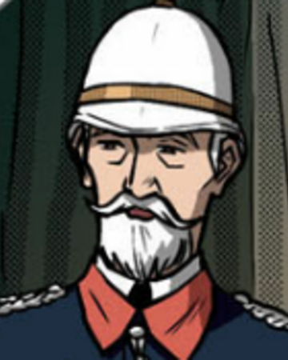

Kabanata 2: Si Crisostomo Ibarra
Dumating si Kapitan Tiyago at si Ibarra na nakapanluksang kasuotan. Lahat ay nagulat ng sila ay makita tila ba hindi sila makapaniwala. Magalang namang binati ni Kapitan Tiyago ang mga panauhin at humalik sa kamay ng mga pari na nakalimot na siya ay bendisyunan dahil sa pagkabigla. Samantalang si Padre Damaso naman ay tila namutla ng makita si Ibarra.
Ipinakilala ni Kapitan Tiyago si Ibarra sa lahat sa pagsasabing ito ay ang anak ng kanyang kaibigang namatay at kararating lamang niya buhat sa pitong taon nitong pag-aaral sa Europa. Kapansin-pansin ang malusog na pangangatawan ni Ibarra, sa kanyang masayang mukha mababakas mon a agad na mayroon itong mabuting puso. Bagamat siya ay kayumanggi, hindi maitatanggi sa pisikal na kaanyuan ni Ibarra ang pagiging dugong Espanyol.
Tinangkang kamayan ni Ibarra si Padre Damaso sapagkat sa pagkakaalam niya ay ito ay isang napakalapit na kaibigan ng kaniyang yumaong ama. Subalit ito ay hindi inamin ng Pari. Tunay ngang siya na ang kura ng bayan. Pero, ikinaila niyang kaibigan niya ang ama ni Ibarra.
Napahiya si Ibarra kaya’t iniatras niya na ang kaniyang kamay. Daglian niyang tinalikuran ang Pari at doon ay nakaharap niya ang tinyenteng kanina pa palang nagmamasid sa kanila. Naging masaya ang pag-uusap ni Tinyente Guevarra at ni Ibarra. Labis- labis ang pagpapasalamat ng Tinyente sapagkat dumating ang binata ng walang anumang masamang nangyari dito. Basag ang tinig ng Tinyente ng sabihin niya sa binatang higit na mapalad ito kaysa sa kanyang ama. Pinuri rin ng Tinyente ang kaniyang ama na naging dahilan upang mapawi pansamantala ang hinala ni Ibarra sa malagim na naganap sa ama.
Sinulyapan ni Padre Damaso si Tinyente kaya’t nilisan nito si Ibarra sa bulwagan. Tulad ng kaugaliang Aleman na natutuhan ni Ibarra buhat sa kanyang pag-aaral sa Europa, ipinakilala niya ang kanyang sarili sa mga panauhing nanduon. Ang mga babae ay hindi umimik sa kanya at tanging mga lalaki lamang ang nagpapakilala rin sa kanya. Doon ay nakilala rin niya ang isang binata na tumigil sa pagsusulat.
Malapit ng tawagin ang mga panauhin para maghapunan, nang lumapit si Kapitan Tinong kay Ibarra para kumbidahin sa isang pananghalian kinabukasan. Ngunit ito ay tinanggihan ng binata sapagkat nakatakda siyang magtungo sa San Diego sa araw na naturan.
Tinyente Guevarra
Matapat na kaibigan ni Don Rafael Ibarra. Siya ang tinyente ng mga guwardiya sibil na naglahad ng katotohanan sa naganap sa ama ni Ibarra.
Repleksyon
Kalimitan kung sino pa ang ating itinuturing na malapit na kaibigan ay siya pang magtatanggi sa atin. Ito ay dulot marahil ng matinding selos o inggit. Ang bahid na ito na may kakayahang sirain ang isang relasyon. Gaya ngayon, kung sino pa yung taong pinagkatiwalan natin ng lahat ay siya palang magtataksil sayo.
Siya na magiging dahilan ng iyong pasanin. Diba’t wala ng sasakit pa na sirain ang tiwalang ibinigay mo. Gayunpaman, palagi nating tatandaan na mayroon tayong natatanging kaibigan. Siya na tatanggapin at ipagtatanggol tayo sa kahulihulihan. Alam kong mahirap humanap ng tunay sa madaming huwad na nagbabalat-kayo. Kaya’t pakaingatan nawa natin ang ating mga kalooban para sa ating kaligtasan.